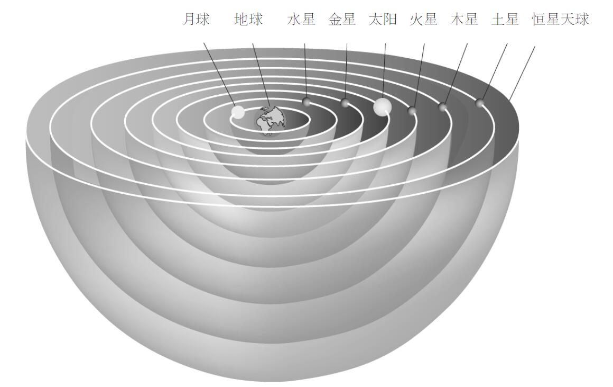
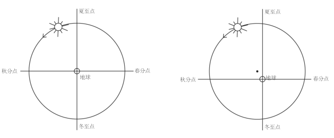
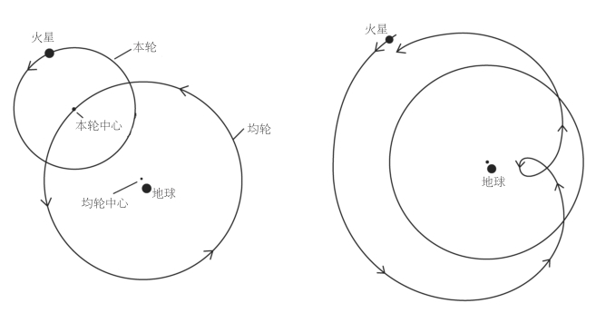
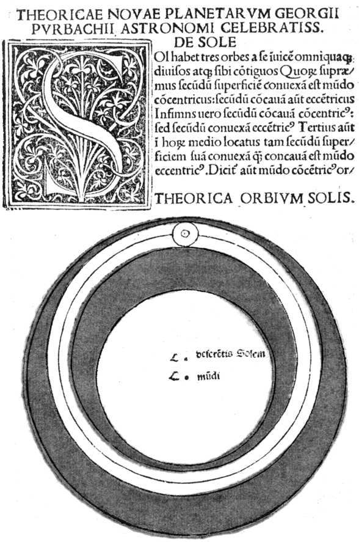
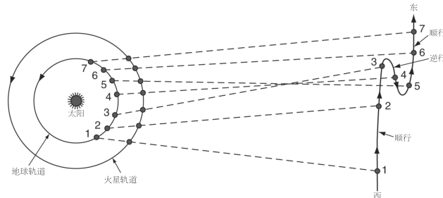
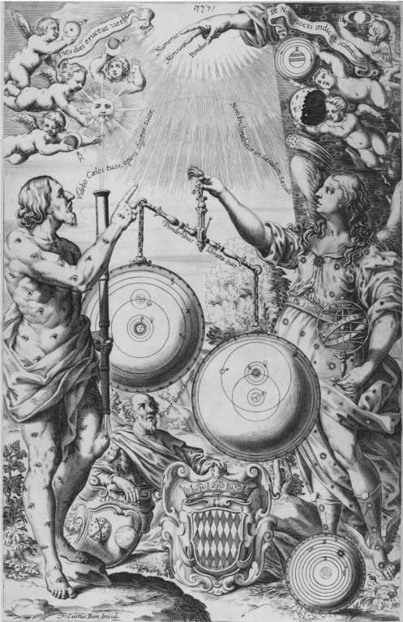

近代以前，天界依其字面含义差不多占据了人们日常世界的一半。任何人都不可能对天和天的运动视而不见。虽然现代科学对天界运行的解释比过去更好，但现代技术的运用却使大多数人不再能够亲眼看到夜空的运行、感受天界的存在并赞叹它的美，这显得讽刺而有悲剧意味。今人要想像先人那样看到绚丽的夜空，就必须远离光污染和工业污染。早在文字发明很久以前，古人就对天的运动有所认识。然而，解释这些运动却耗费了18世纪之前诸多敏锐天才的心力。对天界隐秘结构的逐步揭示是科学革命的一种关键叙事。那个时代最著名的名字——哥白尼、开普勒、伽利略、牛顿——都是这一叙事中最重要的人物。事实上，在很长一段时间里，天文学的发展代表着科学革命时期的唯一 叙事，并且是这一时期被称为“革命”的主要原因。
一个生活在公元1500年左右的有识之士会认为，宇宙分为两个区域：月下世界 包含了从地球到月球以下的一切，月上世界 则包含了月球及其上面的一切。这一划分出自亚里士多德，他基于日常观察区分了不变的天界和变动不居的地界。在月下世界，土、水、气、火四元素不断地结合、分解和重新结合；新的事物产生，旧的事物消亡。月上世界的情况则完全不同，它是一个不变的区域。在亚里士多德之前数个世纪，观星者看到行星和恒星所走的路径具有完美的规则性。这种变化的缺乏使亚里士多德认为，月上世界由一种同质的东西所构成，即被他称为以太 的第五种元素，后来的作者称之为第五元素。以太是纯净的基本元素，既不会变化，也不会分解。
观测背景
希腊人开创了一项长远的事业：从物理和数学两方面解释 天界的运动。这些运动要比今天大多数人所认为的更加复杂和有秩序。每个人都熟知天体的每日升落。天界的一切星体——太阳、月球、行星、恒星——每天升落一次，自东向西穿越天穹。天界的其他运动则要求更加耐心的观测。恒星之所以被称为“恒星”，是因为它们并不相对于彼此运动，而且每隔不到24小时就会回到天空中的同一位置。这就意味着，每颗恒星每晚都比前一晚早升起来一段时间（约四分钟）；因此，你如果在每晚的同一时间观察天空，就会发现，诸星座每晚都会沿着巨大的圆弧缓慢运转；假如你在北半球，这些圆弧的圆心就是那颗永不移动的星——北极星，它位于小熊座的尾端。要想在夜晚的同一时刻看到恒星又回到原先的位置，就得等上一年。由此给人留下的印象是，恒星镶嵌在一个巨大的球壳上，该球壳每隔23小时56分钟绕地球旋转一周。
太阳运行得更慢一些，绕行一周需要整整24小时，这意味着它每天都要改变与恒星的相对位置，相对于恒星背景自西向 东 缓慢运行，需要一年时间才能回到同一颗星的附近。月球的运动与此类似，但要明显得多。它每晚比前一晚迟 升起50分钟，因此你如果接连几晚在同一时间寻找它，就会发现它每晚都向东走了一段距离（不妨试试！）。29天后，月球又回到了初始位置。行星的运行也大同小异，但路径更为曲折怪异，这强烈吸引着人们去寻求解释。在大多数时间里，行星就像太阳和月球一样，相对于恒星背景自西向东缓慢移动。但每隔一段时间，行星就会慢下来，停住不动，转而朝相反方向自东向西运行。这种现象被称为逆行 。再过一段时间，行星再度停下来，掉转方向继续常规的运动。
古希腊人把太阳、月球、水星、金星、火星、木星和土星这七个看起来相对于固定的恒星背景移动的天体称为“行星”（意思是“漫游者”）。但行星不会漫游得太远，它们的运动局限在天上狭窄的黄道带中。黄道被分为等长的十二段，每一段都包含一个星座或“宫”，比如白羊座、金牛座、双子座等等。于是，随着诸行星相对于恒星背景作各自的运动，它们就好像沿着黄道带从一个宫运行到下一个宫。一个人所属的“宫”就是他出生那天太阳“所在”的黄道宫。我们很快会讨论更多有关占星学的内容。
历史背景
柏拉图确信，天界是按照和谐的数学法则运行的。他的灵感来自于毕达哥拉斯学派的观点，该学派是一个秘密宗教团体，认为数学——数、几何图形、比例与和谐——同时是宇宙和有序生活的真正基础。对于柏拉图和近代以前受他影响的人而言，造物主是一位几何学家。然而，行星的不规则运动似乎与一个有序数学世界的观念相悖。因此柏拉图声称，行星的运动仅仅看上去 是不规则的，我们凭借肉眼无法看到其背后的神圣规律。由于柏拉图认为圆是最为完美和规则的形状，圆周运动是无始无终的从而是永恒的，因此他要他的学生用匀速圆周运动 的组合来解释行星的可见运动。这一要求启发着两千多年来的天文学家。
柏拉图的学生欧多克斯提出了一种宇宙模型，它由以地球为中心的一系列同心球（宛如一层层洋葱皮）所组成。每个天球匀速旋转，但每颗行星都会获得若干天球的运动，这些运动组合起来（大致）就是行星的视运动。欧多克斯体系是一个数学 模型。他并不关心天界在物理上如何运作，也不在乎天球是否真的存在，关键是用数学来说明现象。而亚里士多德则试图建立一个物理 模型。他把欧多克斯的天球变成了实在的坚固物体，这些天球实际携带着行星旋转；他还解释了运动如何像天界机械装置的齿轮一样从一个天球传到下一个天球。亚里士多德的功绩在于将天文学和物理学和谐地结合起来（图2）。
同心球模型的问题在于不能精确地解释天文观测，例如行星的亮度会发生变化，就好像它们时近时远，四季长度也不尽相同。这一切都无法用以地球为中心的同心球模型来解释（图3）。
后来的天文学家试图解决这些问题，其顶峰是托勒密（约90—约168）的体系。为了解决季节不等的问题，托勒密引入了偏 心圆 ：也就是说，他把地球移出了中心。在他的体系中，每一个天球都有自己的中心，其中没有一个与地球重合。

图2 亚里士多德同心球模型简化版本的剖面图

图3 假如地球位于太阳天球的中心，太阳的周年视运动将被分成四段等长的弧，使四季等长。但事实上夏天比冬天更长；（右图）托勒密的偏心地球模型将太阳的轨道分成四段不等的弧，对应于长度不等的四季。这种安排还解释了为什么太阳在夏天似乎移动得更慢：因为那时太阳离地球更远。
为了更好地说明行星的位置并解决行星亮度变化的问题，托勒密引入了本轮 （图4）。每颗行星都沿一个小的圆形轨道运行，轨道中心在一个环绕地球的大圆（均轮）上运动。本轮和均轮的运动组合极好地解释了行星表观的环圈路径，行星在运动过程中有时会靠近地球，因而显得更亮。
托勒密体系能够很好地预言行星的位置，但它更多地是一个数学模型而非物理模型。亚里士多德物理学认为重物会落向宇宙的中心，因此球形的地球位于宇宙中心，重物会下落。但托勒密模型中的地球不在中心，它为什么不会移向中心呢？重物为什么会落向宇宙中心之外的某个地方？数学模型与物理体系之间的这种不一致困扰着中世纪的阿拉伯学者，而在当时的欧洲，

图4 托勒密为行星设计的本轮和均轮。行星在本轮上（从地球的北极俯视）逆时针运行，同时本轮在均轮上也作逆时针运动；（右图）由本轮和均轮运动合成的行星视运动。行星位于均轮外侧时显得暗一些，并且自西向东运行；行星位于内侧时因为更近而显得亮一些，最靠近地球时会自东向西运行（逆行）。
亚里士多德和托勒密的工作还不为人知。伊本·海塞姆（或称阿尔哈增，约965—1040）采取了一个折衷方案。他的体系含有以地球为中心的天球，这会使物理学家感到满意。但这些天球坚实而有厚度，足以容纳不以地球为中心的环状通道，行星在这些环状通道中沿着本轮和均轮运行，从而解释了观测到的现象（图5）。
中世纪的欧洲天文学家继承了这些观念和问题，和他们的阿拉伯同行一样继续完善和更新这一体系，以求最精确地预言行星的位置，偶尔也会试图构建一个在物理上令人满意的体系。

图5 普尔巴赫所普及的对伊本·海塞姆有厚度的天球模型的改进，它进入了15世纪的天文学标准教科书——萨克罗博斯科的《天球论》及后来的版本。该图取自1488年的威尼斯版，描绘的是太阳天球。
近代早期的天文学模型
尼古拉·哥白尼（1473—1543）一生中的大部分时间都在担任弗劳恩堡（今波兰境内的弗龙堡）大教堂的教士，这是一个行政性质的圣职。他曾在博洛尼亚大学学习教会法，在帕多瓦大学学习医学，1503年在费拉拉大学获得法学博士学位。在博洛尼亚期间，哥白尼开始研究天文学，到了1514年左右，他写了一份思想概要，声称行星系统的中心不是地球，而是太阳。在他的日心体系中，地球每日绕轴自转一周，这产生了人们所熟悉的一种表象，即整个宇宙绕地球旋转。太阳沿黄道的运动实则是一种假象，其真正原因是地球的绕日运动。观察所见的火星、木星、土星的“环圈路径”和逆行并非缘于它们自身的运动，而是缘于我们地球的运动与它们各自绕日运动的叠加（图6）。只有月球是绕地球运转的。
哥白尼的工作以手稿形式流传，这足以确立他作为天文学家的声誉。1515年，教会的一个委员会希望改革从罗马时代沿用下来、需要彻底改变的旧儒略历，于是写信征求哥白尼的意见。（哥白尼回复说，首先需要更加精确地确定太阳年的长度。）然而，哥白尼并未发表自己对天文学体系的完整阐述。在超过25年的时间里，他一直在完善该体系，要不是几位显要的教士催促他，其成果可能永远都不会发表。例如，1533年，教皇的私人秘书维德曼施泰特讲述了哥白尼体系，教皇克雷芒七世和一些红衣主教听后甚为高兴。卡普亚的红衣主教舍恩贝格写信给哥白尼：

图6 哥白尼对某颗“更高的”行星即外行星（火星、木星、土星）逆行运动的解释。当地球行经其中一颗外行星时，就会造成“环圈路径”的假象。
然而哥白尼依旧含糊其辞，忙于大教堂教士的职守，表示害怕别人批评他的体系过于新颖。
1538年，维滕贝格大学的梅兰希顿派年轻的天文学教授格奥格·约阿希姆·雷蒂库斯来哥白尼这里学习。雷蒂库斯编写发表了一份哥白尼思想的概要，反响很好，哥白尼终于同意发表其完整的手稿，并交由雷蒂库斯出版。雷蒂库斯接手了这项任务，但不久以后他在莱比锡找到了一份工作，遂把出版之事交由路德教牧师奥西安德尔负责。奥西安德尔完成了出版工作，《天球运行论》终于在1543年问世——哥白尼在临终前看到了这本书。
该书的问世并没有招来哥白尼担心的那种批评。不少人读了它，但几乎没有人真正相信。直到16世纪末，坚定的哥白尼主义者可能不过十几人。这是为什么？因为哥白尼的日心体系并不比地心体系更好地符合观测数据，在物理上也没有更简单。事实上，为了让他的体系与观测相符，哥白尼不得不保留本轮，并且让太阳偏离中心。更严重的是，地球运动的观念与基本的物理学、常识乃至可能与《圣经》相抵触。像地球这样的天体自然会落到最低处，即宇宙的中心——这一“自然位置”原理解释了重物为什么会下落。那么，整个地球如何可能悬在离中心这么远的地方呢？常识表明我们并没有在运动。为了每天转一圈，地球必须转得很快，但我们对这种运动浑然不觉，飞鸟和云朵也没有因为地球在其下方高速旋转而落在后面。一些中世纪思想家曾经探讨过地球旋转的可能。尼古拉·奥雷姆（约1325—1382）断言，所有运动都是相对的，如果没有参照点就不可能确定究竟是地球在旋转还是天在旋转。他最后总结称，地球静止而天界运动似乎更有可能。不少对《圣经》作字面解读的人会援引那些说地球静止而太阳运动的段落，尽管解释各不相同。最后，假如地球绕太阳运转，恒星应当有视差——随着地球从轨道的一侧转到另一侧，恒星的相对视位置应当有微小的改变。但在当时，人们从未观测到视差，这就表明，要么地球不在 运动，要么那些恒星远得无法想象 。13世纪时，诺瓦拉的康帕努斯估计土星天球（恒星就在这层天球上方）的高度约为7300万英里，即使是游历最广的中世纪人也会对这一距离感到震惊。哥白尼估计土星天球的高度约为4000万英里，但是根据后来的计算，恒星和我们的距离至少要有1500亿英里，才会观测不到恒星视差。如此广袤的虚空在哥白尼时代的读者看来是荒谬绝伦的。（事实上，连最近恒星的距离也是由观测不到恒星视差所最保守估算的距离的170倍。恒星视差直到1838年才被发现。）
即使没有观测上的证据，也有几个因素能使哥白尼确信日心说。在致教皇保罗三世的献词中，哥白尼把托勒密体系，包括其偏心圆、本轮和对每颗行星的单独处理，说成是一个“怪物”。既然世界“由最高超且最有条理的工匠所造”，它理应是和谐的。作为人文主义者的哥白尼认为自己是在清理后来的“添加”，以回到柏拉图关于揭示井然有序的天界运动的原初召唤。由于担心自己的体系过于“新颖”，哥白尼通过援引古代的先驱——阿里斯塔克、毕达哥拉斯以及西塞罗所提到的希克塔斯，来尽可能地减少显示出来的新颖性；哥白尼甚至对《圣经》中的某些段落作了重新阐释以支持日心说。
然而，人们完全可以在欣赏哥白尼体系的同时又并不相信其真实性。在日心体系中，确定行星位置的星表更容易计算；因此，一些天文学家把它当作一种“方便的虚构”而加以接受。哥白尼本人将日心说视为对世界的真实描述，但奥西安德尔在哥白尼的书中偷偷加入了一篇（未署名的）序言，从而削弱了它的效力。奥西安德尔写道，我们“对行星运动的真正原因一无所知”，而且：
即使哥白尼当时没有中风，他读到奥西安德尔的序言时多半也会。雷蒂库斯大为光火，把自己书上奥西安德尔的序言撕掉了。数学模型与物理体系之间的张力又一次展现出来。多数天文学家主要对行星在某一时刻处于哪个位置感兴趣；至于究竟是太阳绕地球转，还是地球绕太阳转，这根本无关紧要，许多人怀疑是否真的有人能够确定何者为正确。对于天文学理论而言，只要能正确地计算出行星的位置、给出星表，这就够了。对于大多数人而言，实际结果比理论更重要。要想理解这一点，我们需要意识到，早在托勒密时代之前，天文学研究背后的主要驱动力就一直是占星学，而占星学是很实际的，需要计算出行星在多年以前或多年以后精确到分的位置。
实践天文学，或占星学
天文学（字面意思是“星体的法则”）测量和计算天体的位置，并提出假说性的宇宙论体系；而占星学（字面意思是“对星体的研究”，与地质学、生物学等类似）则致力于解释和预言天体对地界的影响。一般来说，这两项事业——前者是理论的，后者是实践的——是由同一批人从事的。近代早期的许多天文学家都主要以从事占星学为生。不要把古代、中世纪或近代早期的占星学与“报纸上根据天宫图算命”的无稽之谈混淆起来。占星学是一项严肃而精深的活动，其基本想法是天体会对地界产生某些影响——这是关联世界观的关键一环。中世纪和近代早期的大多数占星学并不是“魔法的”、超自然的或非理性的，而是依赖于作为世界组织方式之一部分的自然机制。既然光能从行星传到我们这里，为什么不能有一些别的影响伴着光传来，就像火光也能加热远处的物体一样？天界对地界的影响很容易观察到——月球与潮汐相关联，太阳在黄道上的位置决定了季节气候。对人体的影响也同样明显，例如月球周期与人的月经同步。天界影响的真实性十分明显，以至于毋庸置疑；有关占星学的诸多争论其实涉及的是这些影响的程度，以及如何准确预测其效果。七颗行星时刻改变着彼此的相对位置（“星位”），在黄道十二星座（这些星座自身也在不停地穿越十二个“宫”，即相对于地平线的位置）之间往来穿梭，来自这七颗行星的交叉影响形成了一个极为复杂的系统。这一系列征象与禁忌、已知与未知，其复杂性完全不亚于如今人们对全球气候变化因素的探究或是对未来经济走向的预测。与后者相比，近代早期占星学家的成功率或许还会高一些。
占星学包括几个相互交叠的分支。气象占星学致力于预测来年的天气。许多从业者往往被径直称为“数学家”，这表明占星学需要计算；这些人以编写历书为生，书中包含了历法、月球周期、日月食的时间、对天气的预测（就像今天的《农民历书》一样）以及对重要事件或趋势的预言。印刷术使占星学作品变得廉价易得，传播广泛。医生们借助医学占星学来确定治疗过程的关键时间，并提出疾病的可能病因（见第五章）。本命占星学依据一个人的出生地点和出生时的行星位置来确定行星“印入”新生儿的影响。行星影响的特定组合会在体液系统中产生独特或天生的“体质”，这导致了特殊的倾向和特征。这些倾向（易于罹患某些疾病、发怒、懒惰或忧郁等等）可能因为后来的行星排列而暂时加强。因此，这种占星学旨在获知一个人天生的体质，以了解其特殊的长处和弱点，提醒注意可能发生危险或有益健康的时间。这种活动的更强形式渐渐变为一种神判占星学，其决定论色彩（即认为星体的影响支配着我们的行为和命运）令人无法接受，因而广受批评。神学家们谴责这种观念违背了人的自由意志。近代早期学术界的共识是，“星体影响但并不强迫”我们，“有智慧的人支配星体”（sapiens dominatur astris ）。简而言之，人总能选择行动，尽管完全自由地行使意志可能受制于外部影响（例如，火星的特定位置导致体液失衡，进而使人一时冲动，理性能力减弱）。事实上，近代早期的占星学与现代的“先天本性与后天培育”之争有类似之处，它们都试图去解释人的行为。具有讽刺意味的是，其显著差异在于，现代人似乎忘记了自由意志的首要性。
神判占星学有时被用来确定重大事件的良辰吉日。数学家兼魔法师约翰·迪伊（1527—1608/1609）便用占星学为伊丽莎白一世选择加冕吉日。最早的科学社团之一猞猁学院的成立日期是根据天宫图选定的，新的罗马圣彼得教堂的奠基日也是如此。有时，根据占星学选择日期并不是要获得什么有利的“影响”，而是要为事件增添意义，一如美国科学家特意让火星探测器在美国独立日那天着陆。神判占星学还被用来预言未来的事件，比如战争和死亡，这潜在地远离了自然 因果性，而后者正是近代早期学术占星学的基础。要想解决这个问题，可以把一些天象（尤其是彗星）看成征兆 而非原因 ，当作神所传达的有关未来之事的迹象。对天界征兆的兴趣在新教盛行的北欧更加明显，这部分是由于梅兰希顿为萨克罗博斯科《天球论》（一本天文学基础教材）的新教版本所作的一篇序言。他在序言中强调了占星学对于理解上帝在天界中的迹象的重要性。总之，各种类型的占星学为更好的生活提供了有用信息；它在近代早期思想中无处不在，这表明月上世界的确是人们日常世界的一半。
天界变化与神圣和谐
伴随着对天界征兆的占星学兴趣，丹麦的贵族天文学家第谷·布拉赫（1546—1601）首次登场。1572年11月，他发现了仙后座有一个明亮物体，而那里本该什么也没有。第谷惊讶不已——那个物体是什么，意味着什么？第谷在1573年的占星历书中试图作出解释，断言它预示着即将到来的骚乱和动荡。第谷观察这个明亮的光点，它并不像彗星那样会移动。第谷和其他欧洲天文学家试图测量它的周日视差，希望由此推算出它的距离，但他们并没有观测到视差，这意味着此物体比月球远得多，亦即处于月上世界——人们一向认为这个世界是没有变化的，但它却是一颗新 星。［第谷看到的是一颗超新星；那次猛烈爆发的不断膨胀的残留部分在1952年被探明。“新”（nova）来自第谷用来指该星体的拉丁词——新星（stella nova ）。］
不久以后的1577年，天空中出现了一颗明亮的彗星。亚里士多德曾经教导说，彗星和流星一样是月下世界的现象，源自上层大气中散发的可燃物的燃烧。彗星是游移变化之物，不可能处于不变的月上世界。第谷在占星学上断言，1577年的彗星显示了与那颗新星相同的预兆，但这一次他观测到了彗星的周日视差。第谷的观测结果得到了他人确证，该结果表明这颗彗星位于远在月球之上的金星天球。1585年，当另一颗明亮的彗星出现时，第谷给出了相同的观测结果。这些彗星进一步表明，“不变的”天界存在着变化，彗星的位置变化则表明它们正在穿越 行星天球，这意味着带着行星运动的坚实天球并不存在。那么，是什么使行星沿着规则的路径运行呢？行星如何能够摆脱坚实的天球，这着实令人困惑，但它意味着天体的路径能够彼此交叉，这使第谷设计出一个新的天界体系，将其观测结果与托勒密和哥白尼体系中的精华部分结合起来，同时又避免了两者之中招致非议的部分。在第谷的地日心 体系中，地球如常识和《圣经》所指示的那样静止于宇宙的中心，月球则围绕地球运转。而行星则围绕太阳运转，太阳带着诸行星围绕地球运转。
第谷在丹麦海峡的汶岛上建造了城堡式的天文台——天堡，在那里继续观测天空，其准确程度前无古人。此时，约翰内斯·开普勒（1571—1630）这位坚定的哥白尼主义者正在写下自己的惊人发现。16世纪90年代，开普勒在格拉茨的一所高中教书时苦苦思索着现代科学家根本不会去问的一个问题。在哥白尼体系中，围绕太阳运转的行星只有六颗，而不再是围绕地球运转的七颗。而假如有七颗行星，它们就能与一周的七天、七种已知金属、音阶的七个音以及世界上所有其他重要的“七”很好地相合。七颗行星有一种美妙的和谐，适合于一个相互关联的世界；而六颗行星就不行。那么为什么有且仅有六颗行星？上帝又为什么恰好将它们置于如今那么远的距离呢？近代早期的世界中充满了意义与目的，其中一切事物都有某种讯息需要解读。
开普勒在1595年7月19日的课堂上突然意识到，假如在圆内作一个内接正多边形（如正三角形、正方形、正五边形等等），再在这个正多边形内作一个内切圆，那么我们就得到了两个圆，其相对大小是由正多边形的种类决定的。兴奋不已的开普勒开始计算由不同正多边形所决定的比值，看其中是否有某个比值与行星到太阳的距离之比相符合。但他失败了。不屈不挠的开普勒又用球体和正多面体代替了圆和正多边形。这一次，通过将球体和正多面体以适当顺序套起来，开普勒得出，球体的相对大小符合哥白尼理论所给出的行星到太阳的相对距离。不仅如此，由于正多面体（所有面全等的五种所谓的柏拉图立体，即正四面体、立方体、正八面体、正十二面体和正二十面体）只有五种，因此被它们隔开的球体有且只有六个 ，从而行星的数目不多不少就是六颗 。对于开普勒而言，这一发现令人敬畏。他找到了行星数目和距离何以如此的原因，揭示了天界的几何结构，其优雅和美正是哥白尼体系的最佳证明。这一惊人关联不可能出于偶然；开普勒发现了上帝创造天界时所使用的数学方案。
开普勒例证了近代早期典型的人类探索的统一性。神学研究与科学研究并不截然分离：研究物理世界意味着研究上帝的创造物，研究上帝则意味着了解世界。其实，开普勒之所以确信哥白尼的学说，部分是因为日心宇宙为三位一体提供了物理上的对应：位于中心的太阳象征圣父，接收和反射太阳光的恒星天球象征圣子，两者之间充满光的空间则象征圣灵（在神学上代表圣父和圣子之间的爱）。开普勒及其同时代人援引自然之书和《圣经》这两本大书的观念，确信上帝在创造的世界中植入了有待人们发现的讯息。于是，在自然之书中解读出讯息这一神学动机为整个近代早期的科学研究提供了最大的驱动力。
开普勒在《宇宙的神秘》（1596）一书中宣布了他的发现，并且给第谷·布拉赫寄了一本。第谷邀请开普勒与之合作，开普勒起初谢绝了，但在第谷到鲁道夫二世皇帝在布拉格的宫廷担任皇家顾问之后，开普勒于1600年投奔了他。第谷于次年去世，鲁道夫二世让开普勒接任皇家数学家一职。第谷曾让开普勒研究火星的运动，开普勒长期竭力寻找一条与第谷的观测结果相符的轨道，最终得出了一个惊人的结论。他发现，只有让火星沿着椭圆 轨道而不是圆轨道运动，火星的位置才能得到最好的解释。这样一来，开普勒不得不无奈地与两千年来以圆周为基础的天文学传统决裂。不过，既然（用开普勒的话说）第谷“打碎了水晶天球”，又是什么把行星维持在椭圆轨道上运行呢？开普勒假定太阳之中有一种“致动灵魂”（anima motrix），这是一种能够推动行星的力量。和太阳光一样，这种力量随着距离的增大而衰减，因而距离太阳越远，行星运动就越慢。开普勒援引威廉·吉尔伯特（1544—1603）有关地球是个巨大磁体的新近断言（见第四章），假定太阳能够发出第二种力量，它与磁力类似，在某些地方吸引行星，在另一些地方排斥行星。致动灵魂与“磁”性共同作用，使行星无须天球带动就能沿着椭圆轨道运行，被拉近太阳时运动得快些，被推远时运动得慢些。虽然开普勒放弃了匀速圆周运动，但他兴奋地发现了另一种均匀性——“等面积定律”——来取而代之，即当行星运动时，太阳与行星的连线在相等时间内扫过相等的面积。同样，虽然开普勒协助瓦解了亚里士多德的宇宙，但他仍在《哥白尼天文学概要》一书的副标题中指明它是亚里士多德《论天》的“补遗”。连续与变化兼有、创新与传统并存正是近代早期自然哲学的典型特征。
望远镜和地球的运动
第谷用裸眼观测天象的能力无人能及，而他也是最后一批这样做的人之一。当开普勒埋头计算时，伽利略·伽利莱（1564—1642）听说荷兰人发明了一种能使远处物体显得更近的仪器，便亲自作了改进，并于1609年将其指向了天空。几乎每把镜筒（occhiale，后称作望远镜）指向一处，伽利略都会有新的发现。他发现月球表面布满了山脉、峡谷和海洋——换言之，月球看上去与地球非常相似，因此也是由四元素而非亚里士多德所说的第五元素组成的。他发现木星周围有四颗卫星，宛如一个小的行星系统。伽利略根据托斯卡纳大公科西莫二世·德·美第奇之名将这些卫星命名为“美第奇星”，从而使自己名利双收。伽利略发现土星的形状很奇怪，看起来就像是三个连在一起的球体。他还发现金星像月球一样会显示出位相。最后这项发现第一次有力地反驳了托勒密体系，因为在托勒密体系中，金星总是位于太阳与地球之间，因而最多只能呈现出新月形。伽利略观测到了新月形的金星和 满的金星，这表明金星必定时而处于我们和太阳之间，时而远在太阳的另一侧，简而言之，金星围绕太阳运转。从此以后，天文学家只能在第谷体系与哥白尼体系之间进行选择（图7）。于是，这两个体系之间唯一的分歧，即地球是否运动，就成了天文学家最为关切的问题。

图7 里乔利《新天文学大成》（1651）卷首象征性的插图比较了三种世界体系。正义之神阿斯特莱亚正在权衡哥白尼体系和里乔利体系（对第谷体系作了些微调整），托勒密则斜倚在自己已遭抛弃的体系那里。画面上方的小天使手拿行星，显示出新近的发现：水星和金星的位相、月球的粗糙表面、木星的卫星以及土星的“把手”。上帝之手赐福于世界，伸出的三根手指旁标着“数、重量、量度”（《智慧书》11：20），象征着造物的数学秩序。
伽利略迅速出版了《星际讯息》一书，公布了他用望远镜获得的第一批发现，并将这本书与望远镜一道寄给了全欧洲的天文学家和统治者。许多人难以看到伽利略所描述的现象，因为望远镜的放大倍数不高，光学系统很差，难以使用。罗马的耶稣会天文学家提供了关键支持，他们证实了伽利略的观测结果并且继续作出观测，还在1611年举办盛宴向伽利略表示敬意。罗马学院的资深成员克里斯托弗·克拉维乌斯（1538—1612）是欧洲最受尊敬的数学家之一，他设计了教皇格里高利十三世于1582年开始施行（持续至今）的格里高利历；他写道，伽利略的发现要求人们重新思考天界的结构。虽然克拉维乌斯和许多其他人坚持地心说，但一些年轻的耶稣会天文学家可能转向了日心说。然而，这些友好的交往没有继续下去，因为伽利略与两位耶稣会天文学家发生了争论（他在其中常常显得无礼）：一是与克里斯托弗·沙伊纳争夺发现太阳黑子的优先权并且争论黑子的本性，二是与奥拉齐奥·格拉西争论彗星（格拉西支持第谷的观测，认为彗星是天体，而伽利略坚持说彗星是月下世界的视觉幻觉）。
在科学史上，“伽利略与教会”这一情节变成了最大的神话，遭到了最严重的误解。这些事件缘于一系列纠缠不清的思想、政治和私人因素，它们极为错综复杂，历史学家至今仍在试图厘清。这并不 单单是“科学与宗教的冲突”问题。教会内外兼有伽利略的支持者和反对者。与事件有密切关系的因素包括：情感受到冒犯、政治上的阴谋、解释《圣经》的资格、未占天时地利以及被不同教派裹挟。最后一个引爆因素是，伽利略于1632年出版了《关于两大世界体系的对话》，这本书对托勒密体系和哥白尼体系作了比较，并且明确把后者当成正确的，声称地球在运动。伽利略的主要证据是，他认为地球的运动引起了潮汐；在这一点上他完全错了，尽管说地球在运动是正确的。究竟哪一个体系是正确的，与教会本无直接利害关系；地心说和亚里士多德主义都不是教会的教条。然而，《圣经》解释的确与教会休戚相关，不仅地球运动对解释《圣经》有所暗示，而且伽利略在17世纪10年代初为了支持自己的观点更是莽撞地涉足其中。这种对《圣经》的随意解读就像是当时的新教为了拒斥传统解释而许可教徒作出对自己有利的解读。结果，1616年教会要求伽利略把日心说和地球运动的观点当作假说，在找到强有力的证据之前不得认为它们真正正确；伽利略同意了。1624年，伽利略从他的朋友、当时已是教皇乌尔班八世的马费奥·巴贝里尼那里得到了写作《对话》的许可，条件是伽利略要在书中申明教皇在方法论上的观点，即自然现象（如潮汐）可能有若干种原因，其中一些是不可知的，因而我们不能绝对确定地把现象归于某单一原因。伽利略照做了，但只是借一个自始至终扮演傻瓜的角色之口在书的末尾表达了这种观点。伽利略还“忘了”把自己1616年答应教会的事告诉乌尔班。该书（经教廷审查人员的许可）出版后，一切大白天下，乌尔班大发雷霆，感觉自己受了欺骗和羞辱。更糟的是，乌尔班正被当时关于三十年战争的外交谈判、日益强烈的批评、废黜他的阴谋以及有关他即将死去的谣言弄得焦头烂额，原本并不足道的恼火被激化了。宗教裁判所为伽利略拟了一份认罪辩诉协议，建议把伽利略遣送回家并稍作惩罚，但盛怒之下的教皇拒绝了，他坚持要严惩伽利略以警戒他人。伽利略被要求发誓放弃地动说（伽利略照做了），其著作也被教会查禁。值得注意的是，几位红衣主教，包括乌尔班的侄子，都拒绝在对伽利略的判决书上签字。伽利略从未如民间传说中那样被判为异端，遭到关押或囚禁。
最终，伽利略被判软禁于他在托斯卡纳山的别墅中。他在那里继续工作、教学，并且写出了或许是他最重要的一本著作——《两门新科学》。很难说教会对伽利略的判决究竟产生了多大影响。一方面，它使一些自然哲学家对自己的哥白尼主义信念三缄其口。例如，听到伽利略受谴责的消息后，勒内·笛卡尔（1596—1650）将一本刚刚完成的支持日心说的著作藏了起来。像耶稣会士这样担任天主教圣职的人如今不再能够公开支持哥白尼的学说，因此转向了第谷体系或其变种（图7），尽管有时是阳奉阴违。另一方面，在意大利和其他天主教国家，包括天文学在内的科学研究仍然继续着，尽管有时需要回避敏感话题。
继前两代人的观念剧变之后，17世纪中叶的天文学进展更多是在观测和技术方面，而非理论方面。法国神父皮埃尔·伽桑狄（1592—1655）于1631年第一次观察到了水星凌日，1630年辞世的开普勒曾经预言过该现象。改良后的望远镜带来了新的发现和更准确的测量，但由于需要避免球面像差和色差，望远镜造得越来越长、越来越笨重，有的甚至长达60英尺。不过这样人们就能发现土星的奇特形状是一系列环，1656年，克里斯蒂安·惠更斯（1629—1695）发现了土星最大的卫星。吉安·多梅尼科·卡西尼（1625—1712）在巴黎借助罗马光学仪器商朱塞佩·康帕尼制造的精良望远镜又发现了土星的四颗卫星，并依照路易十四的名字将其命名为卢多维奇星。耶稣会士乔万尼·巴蒂斯塔·里乔利（1598—1671）编制了新的星表，并和他的同行弗朗西斯科·玛里亚·格里马尔迪（1618—1663）合作绘制了一张详细的月面图，图上许多有特色的名字一直沿用至今，其中包括以哥白尼来命名最为突出的几座环形山之一。在格但斯克，约翰·赫维留（1611—1687，或许是最后一个同时用肉眼和望远镜进行认真观测的人）也画了一张月面图，他还观测了彗星，参与了全欧洲有关彗星是沿直线运动还是绕日运转的讨论。
行星不借助于坚实的天球如何能够沿恒定轨道运动，这个问题继续引人思索。笛卡尔提出了一个无所不包的世界体系，成为17世纪最重要的体系之一。笛卡尔设想整个空间都被不可见的物质微粒填满。这些微粒一刻不停地在环流或涡旋中运动着。我们的太阳系就是一个由这些微粒构成的巨大涡旋，像水中漩涡带着稻草一样裹挟着行星旋转。这种涡旋模型简洁地解释了为什么行星都沿同一方向且几乎在同一平面上运行。地球本身处于一个较小涡旋的中心，该涡旋带着月球在轨道上运行，地球周围的物质漩涡形成一股“风”将物体推向地心，这就解释了重力现象。笛卡尔的涡旋理论为天体的运动提供了一种综合解释，在通俗讨论和教科书中流传甚广，但它太不精确，对天文学家没有实际价值。
牛顿（1643—1727）年轻时曾拥护笛卡尔的涡旋理论。17世纪60年代初在剑桥读书时，牛顿研究了当时多数大学里仍是本科生标准教科书的亚里士多德著作。但牛顿很快就开始在课外阅读像笛卡尔这样的“现代人”的思想。牛顿接受了笛卡尔解释行星运动和重力的原理的一个修改版本。但是到了17世纪80年代初，牛顿的想法开始转变。他抛弃了笛卡尔的涡旋，开始构想太阳与行星之间存在着一种吸引力。这种想法有几个来源，特别是人们所熟知的磁现象以及开普勒曾经假定的太阳与行星之间存在的“类磁”力。对于开普勒而言，正是这种“磁力”与致动灵魂的结合使行星沿椭圆轨道运行。而在牛顿这里则是惯性（行星沿轨道切线运动的倾向）与朝向太阳的吸引力（我们称之为引力）之间的平衡产生了稳定的椭圆轨道。伦敦皇家学会的几位会员曾以类似的思路解释过行星的运动，特别是罗伯特·胡克（1635—1703）曾在1679至1680年写信给牛顿谈了自己的想法。后来胡克抱怨牛顿剽窃了自己的想法而没有给他以足够的尊重，这使得神经极度敏感的牛顿在自己的著作中对胡克只字不提，并且终生将胡克视为宿敌。牛顿发表于《自然哲学的数学原理》（1687）中的伟大成就，用纯数学的方法重新导出了开普勒根据第谷的观测数据经验得出的行星运动定律，并使引力变得真正普遍，即任何两块物质之间都存在引力。开普勒无疑会对此感到欣慰，因为现在有更多证据表明上帝是按照和谐的数学方案创造了世界。牛顿的万有引力定律最终消除了以往关于地界物理学与天界物理学之区分的最后一抹痕迹——行星运转与苹果下落服从的是同一个定律。
并非所有人都为此欢欣。通过复兴引力的观念，牛顿似乎使一种沉寂了约70年的想法死灰复燃。一种不可见、非物质的力可以在一切物体之间发生作用而没有任何机制或明显原因，这不仅比物质性的笛卡尔涡旋更难以理解，而且在许多人看来是又回到了亚里士多德主义者所说的“隐秘性质”或自然魔法中的共感。事实上，17世纪下半叶自然哲学的前沿问题始终是用不可见微粒的运动来解释那些看起来是吸引或共感的现象（见第五章）；如今牛顿似乎是在开倒车。
牛顿曾与之争夺微积分发明优先权的戈特弗里德·威廉·莱布尼茨（1646—1716）指责牛顿“隐秘的吸引属性”是“对真正哲学之原则的混淆”，是躲进了“古老的无知避难所”。为牛顿辩护的人声称引力吸引乃是物质的一种基本属性，但牛顿本人却想找到引力的原因 。然而，牛顿寻求答案的方法提醒我们，他并不是一位偶然生在17世纪的“现代科学家”。牛顿或许以不同于往常的谦逊认为自己仅仅是重新发现了万有引力定律，古代人对此早已知晓。这是因为牛顿信奉古代智慧（prisca sapientia），文艺复兴时期的许多人文主义者都持有这种看法，认为神在太古时期揭示了一种“原初智慧”，之后随时间而逐渐败坏。牛顿试图阐释希腊神话、《圣经》段落和赫尔墨斯著作，以表明其中蕴藏着关于世界隐秘结构的思想，包括他本人的平方反比引力定律。牛顿似乎认为——并相信“古人”也认为——引力吸引源于上帝在世界中持续的直接作用。正如开普勒觉得自己揭示了上帝的几何设计一样，牛顿认为自己被赋予了使命去恢复古代的知识——不仅仅是科学知识。他年复一年地研究着神学和历史，相信基督教和所有其他知识一样会随时间而败坏，遂致力于恢复据说是“原初性的”神学，例如，这种原初的神学并不包含基督的神性。同样，牛顿之所以钻研古代年代学，部分程度上也是为了获得可靠年代以解释《圣经》关于世界末日的预言。这里我们再一次回到了自然哲学（与现代科学相比）更加宽泛和全面的看法。牛顿认为“自然哲学的任务是恢复关于整个宇宙体系的知识，包括作为造物主和永恒动因的上帝”。